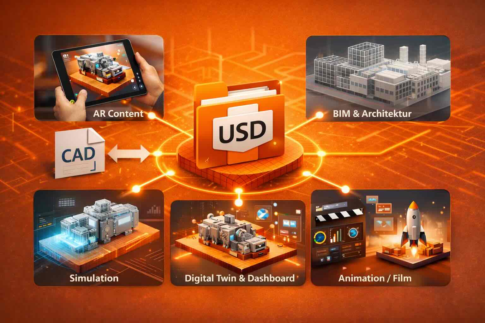
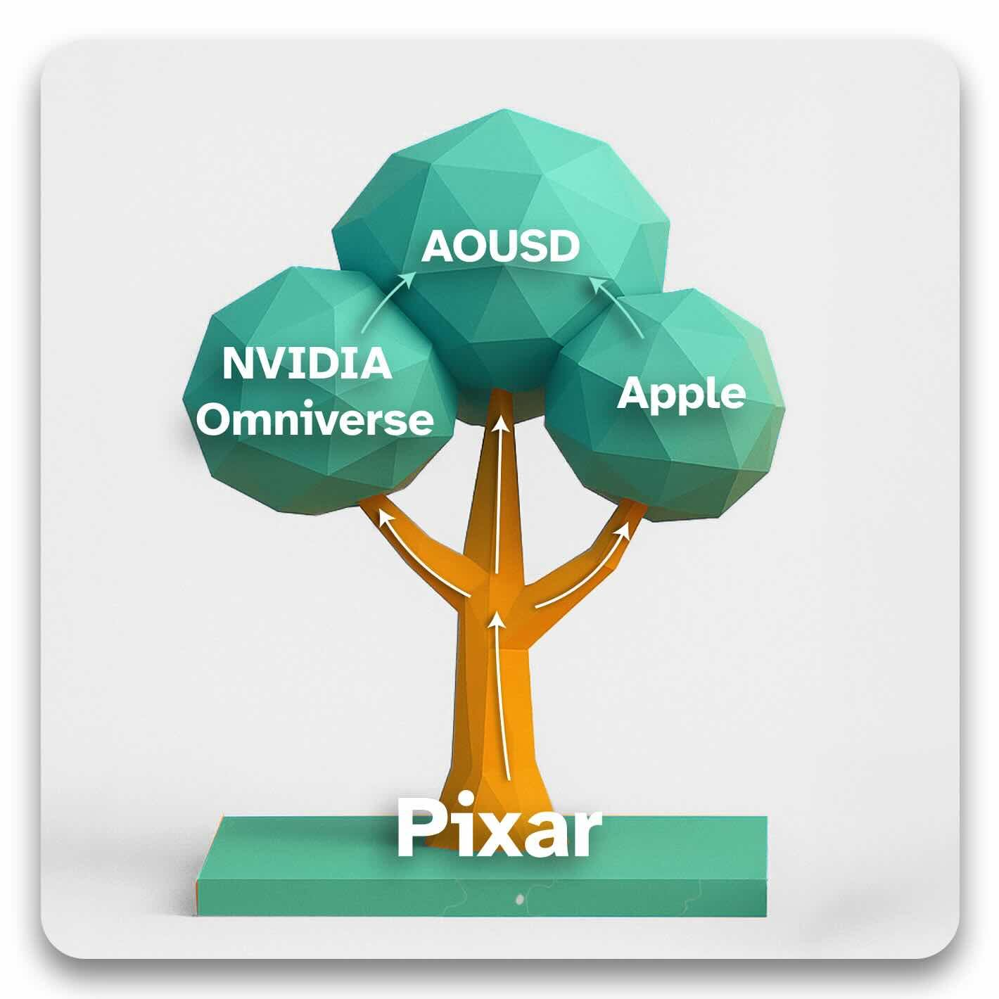
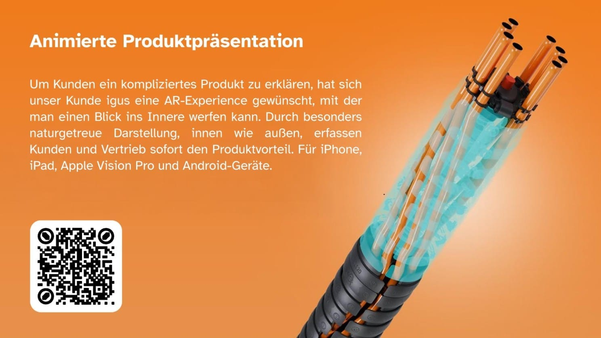

OpenUSD für Entscheider


- Einmal produzieren, überall nutzen: OpenUSD ist der erste offene Standard, der AR, Simulation, BIM und Digital Twins unter einer gemeinsamen Datenbasis vereint: 3D-Daten werden einmalig aufgebaut und über Jahre wiederverwendet.
- Industriestandard mit starkem Rückhalt: Entwickelt von Pixar, heute aktiv weiterentwickelt von Apple, NVIDIA, Adobe und der Alliance for OpenUSD (AOUSD), kein proprietäres Format, sondern offene Infrastruktur.
- Für Entscheider: Wer auf OpenUSD setzt, reduziert Visualisierungskosten, vermeidet Abhängigkeiten von einzelnen Tools oder Dienstleistern und sichert langfristige Wiederverwendbarkeit seiner 3D-Inhalte.
Überblick: OpenUSD-Vorteile für Unternehmen
Ein Gedankenspiel, oder was wäre wenn…
- Diese Datei ohne Aufwand von Kollegen im Marketing & Vertrieb via iPad, iPhone und Apple Vision Pro genutzt werden kann, ganz ohne App-Entwicklung. Aus dem CAD-Programm speichern und direkt im Sales nutzen? Allein dadurch kann im Marketing 10-20 Prozent vom Werbebudget für Computergrafik / Rendering / CGI eingespart werden.
- Kollegen in der Konstruktionsabteilung mit mehreren Personen an einer Datei / Projekt arbeiten könnten? Das spart Entwicklungszeit und somit Kosten.
- Diese Datei viel kleiner wäre als viele herkömmliche CAD-Dateien, was erheblich weniger Speicherplatz und damit geringere Kosten bedeutet.
- Diese Dateien könnten von der eigenen Unternehmens-IT verwaltet und trotzdem mit vielleicht notwendigen externen Dienstleistern geteilt werden. Was wäre, wenn so Lock-In-Effekte vermieden werden können?
- Oder die Abhängigkeit vielleicht zu einem US-Softwareanbieter, wenn notwendig, leichter durch einen EU-Anbieter (Datensouveränität) ersetzt werden kann?
Allein diese fünf Punkte sollten ausreichen sich mit dieser Seite zu beschäftigen.
viSales unterstützt Unternehmen dabei, OpenUSD sinnvoll einzuordnen und praxisnah einzusetzen – vom Apple-AR-Ansatz ohne App bis zu pipeline- und systemorientierten Szenarien: Beratung, Pilot-Projekte etc.
Zur Orientierung
Diese Seite richtet sich an Entscheider aus Marketing und Vertrieb und bietet eine strukturierte Einordnung von OpenUSD. Für einen schnellen Überblick genügen wenige Minuten. Einzelne Themen lassen sich bei Bedarf gezielt vertiefen – über Boxen, weiterführende Inhalte sowie ergänzende Videos und Links im weiteren Verlauf der Seite.
Lesezeit & Inhaltsverzeichnis
Lesezeit
Überblick: ca. 5 Minuten Mit Beispielen & ausklappbaren Boxen: ca. 10–20 Minuten *Vertiefung über Videos & weiterführende Inhalte: optional
Inhalt auf dieser Seite
→ OpenUSD-USDZ zum Ausprobieren
→ Strukturelle Problemstellung vor OpenUSD
→ OpenUSD-Vorteile für Unternehmen
→ Weiterführende Inhalte & Praxisbeispiele
→ Unterstützung bei OpenUSD, USDZ & AR
Lieber als Video?
Wer die Entstehung, Einordnung und strategische Bedeutung von OpenUSD lieber als zusammenhängenden Vortrag sehen möchte, findet hier eine ausführliche Einführung.
→ Vortragsvideo “Einstieg in OpenUSD” ansehen (ca. 30 Minuten)
Lieber als PDF?
Eine PDF-Fassung dieser Inhalte ist in Vorbereitung.
Die strukturelle Problemstellung vor OpenUSD
OpenUSD ist nicht zufällig entstanden, sondern als Reaktion auf wachsende Komplexität in der Arbeit mit 3D-Daten. Was heute als offener Industriestandard wahrgenommen wird, begann als internes Produktionswerkzeug bei Pixar und entwickelte sich über Jahre zu einer gemeinsamen Basis für sehr unterschiedliche Plattformen und Interessen. Diese Entwicklung erklärt, warum OpenUSD heute mehr ist als ein einzelnes Dateiformat – und warum Neutralität dabei eine zentrale Rolle spielt.
Industriebeispiel: Wenn Datensysteme ein Großprojekt blockieren
Ein aktuelles europäisches Rüstungsprojekt im Marineschiffbau (F126) verdeutlicht, wie gravierend die Folgen fehlender Datenkompatibilität sein können. Der Auftragnehmer ist eine Werft in den Niederlanden. Teilfertigungen erfolgen in Auftraggeberland Deutschland. Die eingesetzte Konstruktionssoftware stammt aus Frankreich.
In der frühen Entwurfsphase funktionierte die Zusammenarbeit zunächst. Die ersten Modelle ließen sich austauschen, Abstimmungen waren möglich. Erst im Zuge der weiteren Ausarbeitung zeigte sich das strukturelle Problem:
Die eingesetzten 3D-Datensysteme waren über Ländergrenzen, Unternehmen und Projektphasen hinweg nicht kompatibel.
Daten mussten interpretiert, konvertiert, neu aufgebaut oder manuell angepasst werden. Über die Zeit entstanden Abweichungen, Inkonsistenzen und Brüche in der Datenbasis – nicht punktuell, sondern systematisch.
Die Konsequenzen sind erheblich:
– eine vermutete Projektverzögerung von rund vier Jahren
– massive Kostensteigerungen
– steigender Koordinationsaufwand zwischen den beteiligten Partnern
Besonders kritisch: Es handelt sich um ein Marineprojekt, das in der aktuellen sicherheitspolitischen Lage strategische Bedeutung hat. Inzwischen steht sogar die Option im Raum, das Projekt vollständig zu stoppen.
Doch auch ein Abbruch löst das Problem nicht: Kein neues Schiff ist gebaut. Gleichzeitig sind bereits erhebliche Summen ausgegeben oder fest verplant.
Der Kern des Problems liegt nicht in der Ingenieursleistung der beteiligten Unternehmen. Er liegt darin, dass komplexe 3D-Daten nicht als gemeinsames, durchgängiges System organisiert wurden.
→ Video: Hintergrundinfos zu dem F126-Projekt (ca. 18:30 Min.)
Beispiel aus dem Mittelstand: Verdeckte Kosten durch parallele 3D-Datenwege
Ein deutsches Maschinenbauunternehmen mit rund 50 Mitarbeitenden, soliden Umsätzen und stabiler Auftragslage nutzt 3D-Daten seit Jahren erfolgreich. CAD-Modelle entstehen strukturiert in der Konstruktion und bilden die Grundlage für Entwicklung, Fertigung und Dokumentation.
Mit zunehmender Bedeutung von Marketing, Vertrieb, Simulation und digitalen Präsentationen werden diese CAD-Daten jedoch mehrfach weiterverarbeitet. Für unterschiedliche Zwecke entstehen getrennte Datenstände: für Visualisierungen, für Simulationen, für Web- und Messeanwendungen.
Jede dieser Aufbereitungen ist fachlich korrekt und nachvollziehbar begründet. Sie erfolgt jedoch unabhängig von den anderen – intern wie extern, projektbezogen statt strukturell.
Im Unternehmen entsteht so der Eindruck, dass alles „funktioniert“. Die Aufwände verteilen sich über Abteilungen, Dienstleister und Budgets und bleiben dadurch weitgehend unsichtbar.
Was fehlt, ist eine Gesamtbetrachtung: Wie oft dieselben Daten konvertiert, ergänzt und angepasst werden. Wie viele Arbeitsschritte doppelt oder dreifach entstehen, ohne explizit als solche wahrgenommen zu werden.
Diese Kosten tauchen selten gebündelt auf. Sie sind historisch gewachsen, gut begründet und deshalb kaum hinterfragt.
Erst im Vergleich oder durch externe Impulse wird sichtbar, dass ein erheblicher Teil des 3D-Aufwands nicht wertschöpfend neu entsteht, sondern bestehende Arbeit wiederholt.
Typischerweise liegt dieses verdeckte Potenzial im Bereich von 20 bis 30 Prozent – ohne dass intern von Ineffizienz gesprochen würde.
Das Problem ist kein operatives Versagen.
Es ist ein strukturelles Blindfeld.
Persönliche Einschätzung von Gerhard Schröder, Geschäftsführer vom viSales:
“Aus meiner Sicht gehören diese „Blindfeldkosten“ zu den zentralen Kostentreibern der letzten Jahre. Nicht, weil Unternehmen ineffizient arbeiten, sondern weil immer mehr Plattformen, Kanäle und Formate parallel bedient werden müssen – jedes mit eigenen Anforderungen an dieselben Inhalte.
Die entscheidende Frage lautet daher nicht, ob 3D sinnvoll ist, sondern wofür vorhandene Budgets eingesetzt werden sollen: für immer neue Einzelaufbereitungen – oder für ein breiteres, konsistenteres Content-Angebot bei gleichen Kosten.”
Pixar und die Grenzen klassischer 3D-Datenmodelle
Warum diese Geschichten für Unternehmen relevant sind
OpenUSD ist nicht aus Neugier oder technischer Spielerei entstanden, sondern aus sehr konkreten Problemen, die heute viele Unternehmen aus Industrie, Vertrieb und Marketing wiedererkennen. Die folgenden Beispiele stammen aus der Filmindustrie – sie sind deshalb so wertvoll, weil dort dieselben strukturellen Herausforderungen früher und unter höherem Druck sichtbar wurden.
Warum OpenUSD entstehen musste
Lange bevor OpenUSD öffentlich vorgestellt wurde, war das zugrunde liegende Problem bereits offensichtlich – nur noch nicht systematisch gelöst.
2007, beim ersten von Marvel selbst produzierten Film Iron Man, arbeiteten CGI-Studios auf der ganzen Welt parallel an einem zentralen Objekt: der Rüstung. Sie sollte glänzen, sich realistisch verhalten und in jeder Szene identisch wirken.
Das Problem: Die Studios nutzten unterschiedliche Software und unterschiedliche Datenmodelle, um Materialeigenschaften wie Glanz, Tiefe oder Licht zu beschreiben. Das Ergebnis war vorhersehbar: Die Rüstung sah nicht überall gleich aus.
Nicht gravierend anders – aber unterschiedlich genug, um aufwendig korrigiert werden zu müssen. Die Ursache lag nicht in der kreativen Arbeit, sondern im fehlenden gemeinsamen Datenmodell. Die Lösung für dieses “Teilproblem” heisst heute MaterialX (XML),entwickelt von ILM.
Inkompatible Daten erzeugen Kosten – nicht Qualität
Dieses Muster zeigte sich auch später in reinen Pixar-Produktionen: Bestimmte Datenformate führten zu deutlich längeren Renderzeiten als andere – nicht, weil sie bessere Bilder lieferten, sondern weil sie ineffizient strukturiert waren.
Die Folgen waren real:
– unnötige Rechenzeit
– höhere Infrastrukturkosten
– längere Produktionszyklen
Daraus entstand ein zentrales Ziel: datensparsame, effiziente Datenmodelle, die komplexe Szenen beschreiben können, ohne sie immer wieder neu berechnen zu müssen.
Effizienz wurde zur Voraussetzung für Skalierung.
Ein weiteres strukturelles Problem großer 3D-Projekte: Parallelität statt Blockaden.
Team A arbeitet an einem Objekt.
Team B möchte darauf aufbauen – muss aber warten, bis Team A „fertig“ ist.
Das verhindert paralleles Arbeiten und verlangsamt Projekte massiv. OpenUSD adressiert genau diesen Engpass: Daten werden so organisiert, dass mehrere Teams gleichzeitig daran arbeiten können, ohne Inkonsistenzen oder Abhängigkeiten zu erzeugen.
Warum das für Unternehmen relevant ist
Diese Probleme sind keine Besonderheit der Filmindustrie. Sie sind in großen Industrie- und Infrastrukturprojekten alltäglich. Das Muster ist identisch. Nur der Anwendungsfall ist ein anderer.
Launch von OpenUSD
2015 machte Pixar dieses Prinzip öffentlich greifbar: Ein Pixarmitarbeiter betrat die Siggraph-Konferenz-Bühne, klappte einen Laptop auf, tippte eine Zeile – und nach wenigen Sekunden lief eine hochkomplexe Szene aus Findet Nemo in Echtzeit auf einem handelsüblichen Rechner.
Keine Renderfarm.
Keine Spezialhardware.
Sondern: Dateneffizienz in Reinkultur.
OpenUSD entstand aus genau dieser Notwendigkeit – als Antwort auf ein systemisches Problem: Wie lassen sich komplexe 3D-Daten konsistent, effizient und parallel nutzbar organisieren?

OpenUSD nahm seinen Anfang bei Pixar, bildete mit Apple und NVIDIA Omniverse unterschiedliche Äste – und wächst heute durch die Alliance for OpenUSD (AOUSD) zu einem gemeinsamen Industriestandard zusammen. Mehr zu der Vorgeschichte, Google, Microsoft unter Die Vorgeschichte zu OpenUSD.
OpenUSD: USDZ im Alltag
USDZ begegnet oft beiläufig: Als QR-Code auf einem Messestand, als Link in einer E-Mail oder als Beispiel auf einer Website. Statt einer App öffnet sich unmittelbar ein interaktiver 3D-Inhalt – drehbar, zoombar, auf Wunsch im Raum platzierbar.
Genau dafür ist USDZ gedacht: 3D-Inhalte schnell zugänglich zu machen, ohne Installationsaufwand, ohne Schulung, ohne technische Einstiegshürden. Für Vertrieb, Marketing und Präsentationen bedeutet das vor allem eines: weniger Reibung im ersten Kontakt.
Am besten lässt sich dieses Prinzip verstehen,
indem man es einmal selbst erlebt.

Kurz ausprobieren: Scannen Sie den QR-Code mit Ihrem Smartphone. Der 3D-Inhalt öffnet sich direkt – ohne App, ohne Registrierung.
Falls sich kein 3D-Inhalt öffnet, liegt das in der Regel nicht am Format selbst, sondern am verwendeten Gerät oder Browser: In der Box „Was passiert beim Öffnen …“ finden Sie dazu eine kurze Einordnung.
Was passiert beim Öffnen und warum sieht das je nach Gerät unterschiedlich aus? (Inkl. Link zur Videofassung)
Nach dem Scannen des QR-Codes unterscheidet sich der Ablauf je nach Gerät leicht. Das ist normal und kein Fehler.
*Auf dem iPhone (*.usdz):*
Zunächst erscheint (1) eine Abfrage, ob die 3D-Datei geladen werden soll. Nach dem Download öffnet sich eine Vorschau im Browser. Erst durch einen weiteren (2)* Tipp auf das Vorschaubild startet die AR-Ansicht. *Dieser zusätzliche Schritt ist Teil des Sicherheits- und Download-Konzepts von Apple.
Wichtig: Auf dem iPhone funktioniert die AR-Ansicht aktuell nur über Safari. Ist Google Chrome oder ein anderer Browser als Standard eingestellt, kann es passieren, dass sich beim Scannen des QR-Codes nichts sichtbar öffnet. In diesem Fall hilft es, den Link direkt in Safari zu öffnen.
**Auf Android-Geräten (*.glb):
Hier öffnet sich die AR-Ansicht in der Regel direkt, ohne eine vorgelagerte Download-Abfrage. Der technische Ablauf ist ein anderer, das Nutzungserlebnis für Anwender jedoch vergleichbar. Auf Android wird zur Zeit kein USDZ unterstützt, für die Demo hier haben wir daher eine glTF-/glb-Alternative umgesetzt.
Wenn sich der Ablauf auf dem Gerät unterscheidet, liegt das meist am Browser oder an den Geräteeinstellungen, nicht am Inhalt selbst.
Wir erklären diese Unterschiede bewusst offen, weil sie im Alltag immer wieder für Verwirrung sorgen.**
Falls Sie den Einstieg lieber als zusammenhängende Erklärung sehen möchten: In einem kurzen Video zeigen wir dieselbe AR-Szene und ordnen ein, was im Hintergrund passiert.
→ Video: igus-AR-Szene ansehen (ca. 6:30 Min.)
Wer einordnen möchte, wie USDZ im Arbeitsalltag eingesetzt wird, findet dort eine verständliche Einführung. Anhand konkreter Beispiele zeigen wir, wie 3D-Inhalte in Präsentationen, Videocalls und klassischen Büroprozessen genutzt werden können – ohne App, ohne Spezialsoftware.
Was OpenUSD für Unternehmen bedeutet
Für Unternehmen geht es bei OpenUSD nicht um ein weiteres Dateiformat, sondern um Effizienz, Wiederverwendbarkeit und Datensouveränität im Umgang mit 3D-Inhalten. OpenUSD schafft eine gemeinsame Datenbasis, auf der unterschiedliche Anwendungen aufsetzen können – ohne sich frühzeitig an einzelne Plattformen oder Hersteller zu binden.
Der praktische Effekt: 3D-Daten werden einmal strukturiert aufgebaut und können anschließend in verschiedenen Kontexten genutzt werden, etwa in Marketing, Vertrieb, Web, AR oder systemischen Anwendungen. Unternehmen behalten dabei die Kontrolle über ihre Daten und entscheiden selbst, wie und wo diese eingesetzt werden.
**Einordnung für Geschäftsführung**
OpenUSD ist kein kurzfristiger Technologietrend, sondern eine strukturelle Antwort auf die zunehmende Bedeutung von 3D-Daten in Produktentwicklung, Vertrieb und Kommunikation.
Die Auflösung von Datensilos und alten Datenformaten schafft große Effizienzgewinne = Kosteneinsparung.
Für Konzerne & mittelständische Unternehmen stellt sich weniger die Frage, ob OpenUSD relevant wird, sondern wann und in welchem Umfang. Ein früher Einstieg bedeutet dabei nicht sofortige Umstellung, sondern die Möglichkeit, Kompetenzen und Datenstrukturen schrittweise aufzubauen – ohne Abhängigkeit von einzelnen Plattformen.
Warum große Plattformen auf OpenUSD setzen
Apple, NVIDIA, Pixar, BMW, Daimler, SIEMENS und andere Akteure verfolgen sehr unterschiedliche Geschäftsmodelle. Gemeinsam ist ihnen jedoch ein strukturelles Problem: fragmentierte 3D-Datenlandschaften, die sich nur schwer über Systeme, Abteilungen und Anwendungsfälle hinweg nutzen lassen.
OpenUSD ist die Schnittmenge, auf die sich diese Akteure verständigen konnten. Der Standard ermöglicht es, komplexe 3D-Inhalte strukturiert zu beschreiben, ohne eine konkrete Plattform oder Anwendung vorzuschreiben. Genau diese Neutralität macht OpenUSD attraktiv für Unternehmen, die langfristig planen und technologische Abhängigkeiten vermeiden wollen.
Die zunehmende industrielle Nutzung – etwa im Kontext großer Rechen- und Plattforminfrastrukturen – zeigt, dass OpenUSD nicht als Trendthema verstanden wird, sondern als infrastrukturelle Grundlage für den Umgang mit 3D-Daten in großem Maßstab. Beispiel dafür ist der NVIDIA-Telekom-Deal für Rechenzentren in Deutschland mit NVIDIA-Servern.
→ Telekom: Für ein souveränes Deutschland
Typische Fragen zu OpenUSD im Unternehmenskontext
Die folgenden Fragen begegnen uns häufig in Gesprächen mit Marketing-, Vertriebs- und IT-Verantwortlichen im Mittelstand. Die Antworten sind bewusst so formuliert, dass sie gemeinsam gelesen und eingeordnet werden können – ohne technische Detailtiefe, aber mit strategischer Klarheit.
1. Welche konkreten Probleme im Umgang mit 3D-Daten löst OpenUSD heute?
OpenUSD reduziert doppelte Arbeit, Medienbrüche und inkonsistente Darstellungen. Einmal aufbereitete 3D-Daten können mehrfach genutzt werden, statt für jeden Kanal neu erzeugt zu werden.
Das spart Zeit,
senkt Kosten und
erhöht die Konsistenz in der Kommunikation.
Das mittelständischen Unternehmens aus dem Abschnitt “Verdeckte Kosten durch parallele 3D-Datenwege” konnte so über 20 Prozent externe Kosten über drei Dienstleister hinweg einsparen und behält die Datenhoheit über alle Dateien.
- Was unterscheidet OpenUSD von den Plattformen, die Unternehmen heute bereits einsetzen?
- Warum ist OpenUSD keine Alternative zu CAD- oder PLM-Systemen – und trotzdem strategisch relevant?
3. Welche Rolle spielt Datensouveränität bei OpenUSD?
OpenUSD ermöglicht es Unternehmen, ihre 3D-Daten unabhängig von einzelnen Plattformen oder Tools zu organisieren. Die Daten bleiben im eigenen Verantwortungsbereich und können flexibel in unterschiedlichen Systemen genutzt werden. Das reduziert Abhängigkeiten von einigen US-Unternehmen, weiteren Dienstleistern + Agenturen und erhöht die langfristige Kontrolle über Inhalte.
4. Müssen bestehende CAD-, PIM- oder DAM-Systeme ersetzt werden?
Nein. OpenUSD ist kein Ersatz für bestehende Systeme, sondern eine ergänzende Struktur darüber. Vorhandene Datenquellen bleiben erhalten, während OpenUSD hilft, diese für unterschiedliche Anwendungsfälle nutzbar zu machen.
5. Ist OpenUSD nur für sehr komplexe Produkte sinnvoll?
Nicht zwingend. Auch bei überschaubaren Produktportfolios kann OpenUSD sinnvoll sein, wenn Inhalte mehrfach genutzt oder perspektivisch erweitert werden sollen. Der Nutzen steigt mit der Anzahl der Einsatzkontexte, nicht nur mit der Produktkomplexität.
6. Wie wirkt sich OpenUSD konkret auf Marketing und Vertrieb aus?
Marketing und Vertrieb profitieren von konsistenten, wiederverwendbaren 3D-Inhalten. Visualisierungen können für Website, Präsentationen, Messen oder AR-Anwendungen genutzt werden, ohne jedes Mal neu erstellt zu werden. Das erleichtert die Zusammenarbeit zwischen Abteilungen.
7. Ab welchem Reifegrad lohnt sich OpenUSD für ein Unternehmen?
OpenUSD kann sowohl als strategische Basis als auch schrittweise eingeführt werden. Unternehmen müssen nicht sofort alle Möglichkeiten ausschöpfen, sondern können mit einzelnen Anwendungsfällen (Pilotprojekten) starten und diese später erweitern.
8. Müssen wir uns mit OpenUSD auf einen Anbieter oder ein Ökosystem festlegen?
Nein. OpenUSD ist als offener Standard angelegt und unterstützt unterschiedliche Ausprägungen. Unternehmen können verschiedene Plattformen parallel nutzen -zum Beispiel NVIDIA Omniverse & Apple- und behalten die Freiheit, Schwerpunkte je nach Bedarf zu setzen.
9. Wie zukunftssicher ist OpenUSD als Standard wirklich?
Durch die breite Unterstützung aus Industrie, Software-Herstellern und der Alliance for OpenUSD gilt der Standard als langfristig angelegt. Die organisatorische Verankerung sorgt dafür, dass OpenUSD nicht von einzelnen Marktinteressen abhängig ist. Siehe dazu den Abschnitt “Der strategische Kontext hinter OpenUSD” unter “Weitere Infos”.
10. Ist OpenUSD eher ein strategisches IT-Thema oder ein Werkzeug für Marketing und Vertrieb?
OpenUSD ist beides. Strategisch bildet es eine stabile Datenbasis, operativ ermöglicht es effizientere Abläufe in Marketing und Vertrieb. Der Mehrwert entsteht vor allem dort, wo beide Perspektiven zusammenkommen.
Warum viSales im Vertrieb pragmatisch auf Apple AR setzt
Im Vertrieb zählen vor allem Zugänglichkeit, Verlässlichkeit und geringe Einstiegshürden. Deshalb setzt viSales für viele Vertriebsanwendungen bewusst auf den Apple-AR-Ansatz mit USDZ und AR Quick Look, der ohne App-Installation direkt auf iPhone, iPad und Apple Vision Pro funktioniert.
In der Praxis ist dieser Weg besonders pragmatisch: Auf Messen stehen häufig iPads zur Verfügung, viele Vertriebsmitarbeiter nutzen ein Dienst-iPhone. Eine einmal erstellte USDZ-Datei lässt sich zudem ohne Anpassung auch auf dem Mac einsetzen – etwa als interaktives 3D-Element in Präsentationen. Das reduziert Dateivarianten, Abstimmungsaufwand und technische Vorbereitung im Vertriebsalltag.
Ein weiterer entscheidender Faktor ist die Stabilität der Darstellung. Da Apple Player, Interaktion und Darstellung systemweit integriert, verhalten sich AR-Inhalte reproduzierbar und konsistent – ein wesentlicher Vorteil in Verkaufssituationen, in denen Inhalte zuverlässig funktionieren müssen.
Für viSales ist dieser Fokus auf Apple AR keine Einschränkung. Wir arbeiten sowohl mit nativen USDZ-Ansätzen für Apple-basierte AR- und Präsentationsszenarien als auch mit programmatischen Omniverse-Workflows, wie sie etwa in Umgebungen für Simulation, Automatisierung oder systemische Logik eingesetzt werden.
Wer sehen möchte, wie OpenUSD- und USDZ-basierte AR-Inhalte im Vertriebsalltag eingesetzt werden, findet auf unserer AR- & Messen-Seiten konkrete Projektbeispiele.
→ AR-Beispiele im Vertrieb ansehen (inkl. QR-Codes zum Ausprobieren)
→ AR-Messelösungen nach Standflächenbedarf sortiert
Weiterführende Inhalte & Praxisbeispiele
Embed: https://www.youtube.com/watch?v=IXsxqQGxXvA
Video: Vortragsmitschnitt zu OpenUSD als Masterdateiformat (ca. 22 Min.)
Technische Details, Unterschiede zu anderen Formaten und konkrete Einsatzszenarien werden auf diesen separaten Seiten vertieft:
→ Apples USDZ-Ansatz für Einsteiger
→ AR-Beispiele aus dem Vertriebsalltag ansehen
Weiterführende Inhalte zu OpenUSD & USDZ
Die folgenden Links vertiefen einzelne Aspekte rund um OpenUSD, USDZ und deren praktische Nutzung.
Strategische Einordnung
→ Digital Twins im Mittelstand
Praxis & Anwendung
→ AR-Beispiele für Messezwecke ansehen
→ Video: AR im Vertrieb (ca. 16 Min.)
→ Von CAD zu USDZ & OpenUSD zu AR im Vertrieb
→ Spatial Websites auf OpenUSD-Basis
Branchen & Vertiefung
→ AR im E-Commerce, eine Einordnung
→ Video: Die OpenUSD-Story (ca. 27 Min.)
Leicht technischer: Warum OpenUSD technisch so flexibel ist
Wer verstehen möchte, warum OpenUSD so flexibel einsetzbar ist, stößt zwangsläufig auf einige grundlegende Konzepte: OpenUSD ist kein einzelnes Dateiformat, sondern ein System aus grundlegenden Konzepten, die gemeinsam flexible 3D-Strukturen ermöglichen. Zu den wichtigsten gehören:
Layer:* Inhalte können in logisch getrennten Ebenen organisiert werden, etwa nach Varianten, Zuständigkeiten oder Anwendungsfällen. Referenzen: Modelle und Inhalte lassen sich verknüpfen, ohne sie zu duplizieren. Änderungen wirken sich automatisch auf alle Verwendungen aus. Varianten: Unterschiedliche Ausprägungen eines Produkts oder einer Szene können strukturiert verwaltet werden, ohne separate Dateien zu erzeugen. *Payloads: Inhalte können gezielt nachgeladen werden, um Performance und Übersicht zu verbessern.
Diese Konzepte sind der Grund, warum OpenUSD sowohl für einfache Visualisierungen als auch für komplexe industrielle Szenarien geeignet ist – ohne dass Unternehmen sich früh auf eine konkrete Nutzung festlegen müssen.
Was OpenUSD nicht ist & Was die AOUSD nicht tut
OpenUSD wird häufig missverstanden, weil es kein klassisches Produkt ist. Um den Standard richtig einzuordnen, hilft es zu klären, was OpenUSD bewusst nicht sein will.
OpenUSD ist:
kein einzelnes Dateiformat wie OBJ, FBX oder glTF kein Tool, keine Software und kein Produkt kein Renderer und keine Game Engine kein Ersatz für Design-, CAD- oder 3D-Authoring-Werkzeuge
OpenUSD beschreibt nicht, wie ein Objekt aussieht oder gerendert wird. Es beschreibt, wie 3D-Inhalte strukturiert, verknüpft und organisiert sind, damit viele Beteiligte mit denselben Daten arbeiten können – ohne sie ständig zu kopieren oder zu zerstören.
Ein vereinfachtes Beispiel: Ein Auto besteht aus tausenden Einzelteilen. In einem klassischen Workflow werden daraus immer wieder neue Dateien erzeugt – für Rendering, für AR, für Simulation, für Präsentationen. Jede Kopie lebt ihr eigenes Leben.
OpenUSD verfolgt einen anderen Ansatz: Die Tür bleibt die Tür, das Rad bleibt das Rad. Unterschiedliche Anwendungen greifen auf dieselben Bausteine zu, ergänzen Informationen oder Varianten, ohne die ursprünglichen Daten zu überschreiben.
OpenUSD ist damit weniger ein „3D-Format“ als eine gemeinsame Sprache, die es erlaubt, komplexe 3D-Szenen über Werkzeuge, Teams und Anwendungsfälle hinweg konsistent weiterzuentwickeln.
USDZ gehört genau an diese Stelle im Modell: USDZ ist keine Alternative zu OpenUSD, sondern eine konkrete Ausprägung davon – ein Datei- & Distributionsformat, das OpenUSD-Inhalte für bestimmte Einsatzzwecke verpackt und transportierbar macht. In diesem Sinn lässt sich USDZ als „Tochter“ der OpenUSD-Mutter verstehen: auf demselben Fundament aufgebaut, aber für einen klar umrissenen Zweck optimiert.
Zur Vertiefung: Viele Missverständnisse rund um OpenUSD und USDZ entstehen durch verkürzte oder widersprüchliche Darstellungen im Web. Der Artikel „Sechs Mythen zum OpenUSD-Standard – die USDZ-Akte“ ordnet diese Annahmen systematisch ein und erklärt, woher sie stammen.
→ Sechs Mythen zum OpenUSD-Standard
Was die Alliance for OpenUSD (AOUSD) bewusst nicht tut
Die AOUSD verfolgt einen klar abgegrenzten Auftrag. Sie schafft Rahmenbedingungen für einen offenen Standard – nicht mehr und nicht weniger.
Die AOUSD:
entwickelt keine eigene Software schreibt keine Workflows oder Nutzungsszenarien vor kontrolliert keine Plattform* und kein Ökosystem
Damit unterscheidet sich OpenUSD bewusst von vielen technologiegetriebenen Initiativen. Unternehmen behalten die Freiheit, OpenUSD in bestehende Prozesse zu integrieren, eigene Werkzeuge zu nutzen oder unterschiedliche Plattformen parallel einzusetzen. Die AOUSD sorgt für Kompatibilität – nicht für Vorgaben.
Die Vorgeschichte zu OpenUSD
Beim Verfassen dieses Abschnitts ergab sich ein eigener Longread, der daher als eigener Artikel erschienen ist.
OpenUSD in der Praxis: Drei Ansätze, ein Standard
OpenUSD wird von unterschiedlichen Akteuren genutzt, die sehr verschiedene Ziele verfolgen. Die Übersicht zeigt, wie Pixar, Apple und NVIDIA OpenUSD jeweils einsetzen – und warum sich diese Ansätze ergänzen.
| Pixar | Apple | NVIDIA Omniverse | |
|---|---|---|---|
| Ausgangspunkt | Film & Animation | Endgeräte & Betriebssysteme | Simulation & Infrastruktur |
| Zielsetzung | Strukturierung komplexer Szenen | Distribution & Nutzung ohne App | Systemische Workflows |
| Typischer Einsatz | Animation Produktion | AR, Präsentation Vertrieb | Simulation Digitale Zwillinge |
| Rolle von OpenUSD | Neutrales Szenenformat | Basis für USDZ und AR Quick Look | Pipeline- & Integrationsschicht |
| Einordnung für Unternehmen | Ursprung & Fundament | Niedrigschwelliger Einstieg für Vertrieb | Skalierbare Basis für Systeme |
Alle drei Ansätze nutzen OpenUSD, verfolgen jedoch unterschiedliche Ziele. Für Unternehmen entsteht daraus Wahlfreiheit je nach Anwendungsfall.
Pixar (Animation)
OpenUSD entstand bei Pixar aus einem sehr konkreten Problem der Animations- und Filmproduktion: Komplexe Szenen bestehen aus tausenden Objekten, Charakteren, Animationen, Materialien und Varianten – und werden gleichzeitig von vielen Abteilungen bearbeitet.
In klassischen Workflows führte das zu Kopien, Versionskonflikten und instabilen Szenen. Animationen mussten immer wieder neu integriert werden, Änderungen an einem Objekt wirkten sich unvorhersehbar auf andere Teile der Szene aus.
Pixar entwickelte USD deshalb als Szenenbeschreibungssystem, nicht als reines Geometrieformat. Zentrale Konzepte sind:
Referenzen statt Kopien* (ein animierter Charakter bleibt eine Quelle), Layer statt Überschreiben (Animation, Shading, Layout getrennt), Varianten statt Dateiduplikate (unterschiedliche Zustände derselben Szene).
Gerade für Animation war dieser Ansatz entscheidend: Bewegung, Timing und Abhängigkeiten konnten definiert werden, ohne die gesamte Szene jedes Mal neu aufzubauen. Eine Animation ergänzt die Szene – sie ersetzt sie nicht.
OpenUSD ist bei Pixar damit kein Exportformat, sondern das organisierende Rückgrat der gesamten Produktion. Es ermöglicht, dass Layout, Animation, Lighting und Rendering parallel arbeiten können, ohne sich gegenseitig zu blockieren oder Daten zu zerstören.
Diese Logik – Szenen wachsen über Zeit, statt immer neu erzeugt zu werden – bildet bis heute das konzeptionelle Fundament von OpenUSD, auch weit über den Film hinaus.
Apple (Augmented Reality)
Apple unterstützt OpenUSD aus einer konsequent endgeräteorientierten Perspektive. Ziel ist es, 3D-Inhalte so bereitzustellen, dass sie ohne Programmierung, ohne App-Entwicklung und ohne Laufzeitabhängigkeiten zuverlässig auf realen Geräten genutzt werden können.
Dafür hat Apple zwei zentrale Bausteine etabliert:
Erstens: Werkzeuge zur Erstellung finaler USDZ-Dateien.
Apple stellt eigene Authoring-Werkzeuge (Reality Composer Pro) bereit, mit denen USDZ-Inhalte per Point-and-Click erzeugt und gespeichert werden können. Dieser Ansatz reduziert Komplexität bewusst: Interaktion, Animationen und Materialien werden direkt im USDZ-Container definiert – ohne Skripting, ohne externe Logik, ohne die typischen Fehlerquellen programmatischer Pipelines.
Zweitens: Eine systemweite Abspielumgebung.
Mit AR Quick Look existiert seit über zehn Jahren eine Abspielkomponente, die fester Bestandteil aller Apple-Betriebssysteme ist. USDZ-Dateien lassen sich damit direkt anzeigen – auf iPhone, iPad, Mac und in räumlichen Umgebungen auf der Apple Vision Pro – ohne zusätzliche Installation und ohne App-Zwang.
In Kombination ergibt sich ein klarer Ansatz: OpenUSD dient als strukturelles Fundament, USDZ als finales, abgeschlossenes Distributionsformat, und AR Quick Look als standardisierte Laufzeitumgebung. Apple nutzt OpenUSD damit nicht primär als Produktionssystem, sondern als Mittel, um 3D-Inhalte stabil, reproduzierbar und massentauglich auf Endgeräten auszuliefern – insbesondere für Augmented Reality- und Spatial-Computing-Szenarien mit iPhone, iPad, Mac und Apple Vision Pro.
Unterstützung bei OpenUSD, USDZ & AR
OpenUSD eröffnet neue Möglichkeiten – wirft aber auch viele praktische Fragen auf: von der Datenaufbereitung über (Apple-) AR-Nutzung bis hin zu systemischen Ansätzen wie NVIDIA Omniverse.
viSales unterstützt Unternehmen dabei, OpenUSD sinnvoll einzuordnen und praxisnah einzusetzen – vom Apple-AR-Ansatz ohne App bis zu pipeline- und systemorientierten Szenarien: Beratung, Pilot-Projekte etc.
Du willst OpenUSD in deinem Unternehmen einsetzen? viSales als OpenUSD-Dienstleister — Beratung und Umsetzung aus Bochum.
Häufige Fragen
NVIDIA Omniverse (Simulation)
Beim Verfassen dieses Abschnitts ergab sich ein eigener Longread, der daher als eigener Artikel erschienen ist.→ NVIDIA Omniverse, eine Einordnung für den Mittelstand
Warum der Ansatz von Apple und NVIDIA kein Widerspruch ist
Apple und NVIDIA verfolgen mit OpenUSD unterschiedliche Ziele – nicht unterschiedliche Wahrheiten.Apple optimiert OpenUSD für Nutzung und Darstellung auf Endgeräten, NVIDIA für Systeme, Pipelines und Simulationen. Beide Ansätze setzen auf denselben Kernstandard, bewegen sich jedoch auf unterschiedlichen Ebenen der Wertschöpfung.OpenUSD trennt bewusst Fundament und Nutzung. Genau diese Trennung erlaubt es, Inhalte einmal strukturiert aufzubauen und sie anschließend sowohl für Distribution, AR und Spatial Computing als auch für Simulation, Automatisierung und KI-gestützte Prozesse zu verwenden.Der scheinbare Gegensatz ist damit kein Konflikt, sondern ein Beleg für die Stärke des Standards: OpenUSD ist flexibel genug, um sehr unterschiedliche Anforderungen zu tragen – ohne die gemeinsame Datenbasis aufzugeben.
Erweiterungen im Apple-Ansatz: was AR Quick Look mehr kann als die Authoring-Tools
Apple trennt im USDZ-Ansatz bewusst zwischen Erstellung und Abspielumgebung. Die offiziellen Authoring-Werkzeuge ermöglichen es, finale USDZ-Dateien ohne Programmierung zu erzeugen. Diese Werkzeuge decken jedoch nicht alle Funktionen ab, die der systemweite Player AR Quick Look tatsächlich unterstützt.AR Quick Look ist seit vielen Jahren tief in die Apple-Betriebssysteme integriert und kann Inhalte darstellen und abspielen, die über den Funktionsumfang der grafischen Entwicklungsumgebungen hinausgehen. Dazu zählen unter anderem weitergehende Interaktionslogiken, Zustandswechsel oder dynamische Verhaltensweisen.Wir von viSales nutzen diese Trennung bewusst: Neben der Point-and-Click-Erstellung setzen wir auf gezielte Ergänzungen durch eigene Programmierungen, wo die Authoring-Tools an ihre Grenzen stoßen, der Player diese Funktionen jedoch zuverlässig unterstützt.Wichtig ist dabei die klare Grenze dieses Ansatzes: Ein USDZ-Inhalt, der über AR Quick Look abgespielt wird, ist grundsätzlich in sich abgeschlossen. Ein Datenaustausch mit externen Systemen während der Laufzeit – etwa das Nachladen von Simulationsdaten, Sensordaten oder Zuständen aus anderen Systemen – ist nicht möglich.Beispiel: Eine laufende Simulation, deren Ergebnisse während der Darstellung in das 3D-Modell zurückgeschrieben werden sollen, lässt sich nicht über eine reine USDZ-Datei in AR Quick Look abbilden. Solche Szenarien erfordern entweder eine App, eine Applet- oder Web-Laufzeit oder systemorientierte Plattformen wie die von NVIDIA.Der USDZ-Ansatz von Apple ist damit bewusst auf stabile, lokale und vorhersagbare Inhalte ausgelegt. Genau diese Begrenzung macht ihn für AR-, Präsentations- und Vertriebsszenarien wie einer Messe zuverlässig – grenzt ihn aber klar von app- oder systembasierten Lösungen ab.
Selbst-Check: Ist OpenUSD jetzt für uns relevant?
[ ] Wir erstellen 3D-Visualisierungen über mehr als 2 externe Dienstleister[ ] Unsere CAD-Daten werden für Marketing-Zwecke mehrfach aufbereitet[ ] Produktänderungen führen regelmäßig zu veralteten Visualisierungen[ ] Wir haben >5 Messen pro Jahr oder regelmäßige Produktvorführungen[ ] Unser Vertrieb würde von AR-Visualisierungen profitieren[ ] Wir planen mittelfristig Digital Twin/Simulation-Projekte5-6 Ja → hohe Relevanz3-4 Ja → mittlere Relevanz, Pilot sinnvoll<3 Ja → beobachten, noch nicht priorisieren
FAQ: Typische Entscheiderfragen zur OpenUSD-Einordnung
Bevor über konkrete Vorteile, Tools oder Formate gesprochen wird, stellen sich in Unternehmen meist grundlegendere Fragen. Diese haben wir auf einer separaten Seite strukturiert zusammengefasst:→ OpenUSD für Entscheider: Häufig gestellte FragenDie Fragen sind in 5 Cluster unterteilt:Kosten, Aufwand und versteckte Mehrarbeit – Wann rechnet sich das? Was kostet Nicht-Handeln?Organisation, Schnittstellen und interne Reibung – Wer macht das? Haben wir Kapazität?Abhängigkeiten, Plattformen und Datensouveränität – Vendor Lock-in? Was wenn OpenUSD scheitert?Zukunftsfähigkeit und Skalierung – Wie stellen wir Wiederverwendbarkeit sicher?Umsetzung, Vertrieb und Erfolgsmessung – Wie ändert sich das Verkaufsgespräch? Welche KPIs?→ OpenUSD für Entscheider: Häufig gestellte FragenWer wenig Zeit hat oder gezielt einzelne Fragen klären möchte, kann auch das viSales-Notebook.LLM nutzen. Es basiert auf Google-KI, greift jedoch ausschließlich auf viSales-eigenen Inhalte, Vorträge und Projekterfahrungen zu. Ziel ist Orientierung und Einordnung, nicht Verkauf oder Marketing→ Notebook.LLM nutzen: Einfach die Frage in den Chat schreiben.